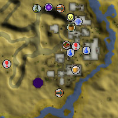
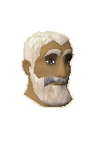
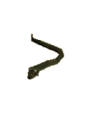

")
Pollnivneach (Members)
Warning | Introduction | Location | Points of Interest | Personalities
Quests | Beasts and Bullies | Miscellaneous
Quests | Beasts and Bullies | Miscellaneous
Warning
Pollnivneach lies in the Kharidian Desert and is not an easy place to reach unharmed. It is advised that you take a lot of water with you, as well as wearing a full set of desert robes. You can gather water from certain cacti, but you will need a knife to do so. Read more about surviving the desert here.
Introduction

Despite the strife in the town (all caused by a camel, I might add), Pollnivneach is a terribly entertaining town and well worth the journey across the desert.
Location

Directly south-east, across the Elid River, lies Nardah, which suffers from a drought, while to the north-west is the Desert Mining Camp.
Further south is the Agility Pyramid, where poor Simon Templeton - an 'archaeologist' past his prime - rewards adventurers for gathering ancient artefacts for him.
Pollnivneach is the central hub for the flying carpet network.
Points of Interest

One of the most obvious features of the town is the distinct division between the Menaphites and the Bandits. While the southern half of the town is filled with the purple-robed Menaphites, the Bandits in white wander the northern half and they never mingle at any point.
Adventurers of a less moral persuasion enjoy the many opportunities that Pollnivneach presents them, as blackjacks are a common tool, and there are more than a few shady spots to which the citizens may be lured.
South of the Asp and Snake Inn is a snake charmer and a camel seller keeps his herd in the west of the town.
Personalities
|

Ali has constant problems with the warring gangs, as well as the occasional adventurer wandering through and stirring up further trouble between them. He does own the largest house in town, though, and has excellent views over the river to the much unluckier Nardah.
|

Ali is the leader of the Menaphite gang and is much more approachable and reasonable than you would expect from a criminal. He is probably the most powerful man in Pollnivneach, so it's a good idea to keep on his side.
|
|
| Ali the Mayor can be found in the town square. | Ali the Operator can be found in or around his tent in the southwest of town. |

Ali lives on the hill overlooking the town, keeping to herself, not only because she is a witch, but also because her name is actually Alice. She is a deviser of poisons and hexes, and is prone to making dire threats.
|

Despite the dangers of being named anything but Ali, it is possible to get by in Pollnivneach, which is proven by Sumona's presence there. No one really remembers her arriving, though, but they're quite sure she has been living there for... some time?
|
|
| Ali the Hag can be found on the hill overlooking the town. | Sumona lives in the house south of the General Store. |
Quests
You can start the following quest in Pollnivneach:
- Smoking Kills (Members)
Beasts and Bullies
|

Desert Snakes are one of the most harmless creatures that move upon the sands. They are not great fighters and most adventurers should have no difficulty in fighting them off. |

Jackals are cunning animals with a powerful pack mentality. You will almost never find a jackal alone as they wander the desert near human settlements. Jackals are not powerful enemies, but if you have just crossed the desert without much water...
|
|
| Desert snakes can be found west of the town. | Jackals can be found west of town. |

The bandits that rule the north of Pollnivneach are well-trained fighters with few scruples. They'll happily defend themselves when attacked, and are probably only slightly disappointed if they die. Their robes are poor armour, though, and slash attacks are quite effective.
|

The Menaphites are the showier of the two gangs, dressing in vivid purple and gold robes and walking the streets with blackjacks in their hands. Like the bandits, though, their robes aren't very strong defence, and slashing attacks will also work admirably.
|
|
| Bandits can be found in the northern half of Pollnivneach. | Menaphite thugs can be found throughout the southern half of town. |

Crocodiles are massive reptiles that enjoy little more than dragging unwary adventurers into the river for a snack (though they might leave them there for a while to soften up). Their natural armour is quite effective, but Magic and slashing attacks work well at getting through.
|
| Crocodiles can be found in and around the Elid River, south of town. |
Miscellaneous
- The Asp and Snake Inn has an empty beer glass on a table.
- There are two buckets on the floor in Ali's Discount Camel Store.
- For those of you keen on a desert hideaway, there is a house portal just north of town.
- You can recharge your Camulet in Pollnivneach by feeding the camels some red hot sauce, scooping the resulting dung up in a bucket and using it with the Camulet. It may be foul, but it's the only way.
- Pollnivneach is the only place that you can fly to from Nardah.

More articles in
Cities and Towns
|
|